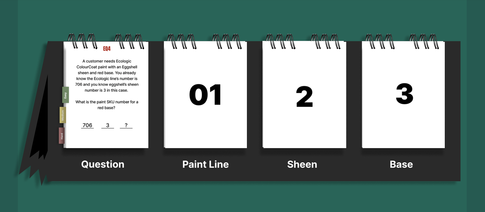

Interaction design
Paint SKU Training Flipbook
A physical training tool developed through a client collaboration with Cloverdale Paint to help new employees learn and practise paint SKUs.
I’m interested in how design and technology come together to solve problems. My work ranges from web applications and interaction design to experiments with AI, audio, and data. I enjoy figuring out how things should work, building them, and working through the details that make an experience feel intuitive.
I’m a recent Interactive Arts & Technology graduate from Simon Fraser University with experience in web and mobile development, interaction design, and creative technology. I enjoy taking an idea from an early concept through to something people can actually interact with. I’ve worked on websites, mobile apps, interactive visualizations, AI projects, and computer-vision systems.

Interaction design
A physical training tool developed through a client collaboration with Cloverdale Paint to help new employees learn and practise paint SKUs.

Full-stack web application
A full-stack web application for exploring and documenting Canadian heritage sites, built with the MERN stack.
User research, wireframing, prototyping, visual design, and thinking through how people interact with a product.
Building responsive interfaces, working with APIs and databases, and connecting front-end features to backend functionality.
Exploring audio, data visualization, generative AI, and computer vision through hands-on projects and working prototypes.